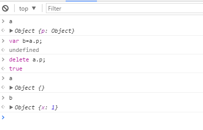

object
Contents
1.Create objects, query and assign, delete, test, enumerate property
In this section, there are introduction about some basic operation of javascript object.
1.1 Create objects
Object literals, Object.create(), constructor function
Object literals
Object.create()
var a={};
var b={x:1,"for":"-anc"}
property name includes spaces, hyphens, reserved words must use string literals.
| Object literals |
var a={};
var b={x:1,"for":"-anc"}
Note: property name includes spaces, hyphens, reserved words must use string literals. |
| Object.create() |
var a=Object.create(null);
var b=Object.create(p);
The arguments: prototype of new object, [property descriptor]. The first arguments can be null or object. when you send null to the function, the new object will not inherit nothing, even though basic methods like toString(). |
| ---user-defined: inherit() | |
| create object with new |
var a=new Object();
The prototype property of constructor function will be the prototype of the new object. |
1.2 query and setting properties
1.2.1 use . or []
Dot=>identifier, you can change the identifier dynamic
[]=>the content in square bracket will parse to string. You can manipulate and create string when a program is running.
1.1.2 inheritance: query and assign
There is a important feature of objects which will influence the process of query property that is inheritance. When you query property x in the object a, first find own property of a, if not find, then query x in object prototype until an object with a null prototype.
What happen when you assign value to a object? First examine the prototype chain whether the assignment is allowed. For example, the property is inherited and is read-only. If assignment is allowed, it always creates or sets a property in the original object, and it never change the prototype chain.
Note: there is one exception to the rule of property assignment. If inherit a accessor property, it just call the method on ,not the prototype object that defines the property.
1.1.3 property access errors
error for query
query property of an object that dose not exist.
Error for set
- own read-only property(exception : definerProperty())
- inherited read-only property: It not allowed to hide a inherited read-only property with an own property of same name.
- if p doesn't exist, and there is no setter method, so p must be added to a. but the a extensible attribute is false. a does not have an own property p; a does not inherit a property p with a setter method, and a extensible attribute is false.
1.3 delete property
delete o.prop;
The delete operator can operate only own property, and the delete always break off the relationship between object and property value,
delete does not operate on the value of the property but on the property itself.

In fact, variables that are not referenced in JS are automatically recycled.
1.4 test property
prop in obj1; //true if obj1 has prop(own or inheritance)
obj1.hasOwnProperty(prop); // true if obj1 has own property prop
obj1.propertyIsEnumerable(prop); //true if prop is own property and Enurmerable attribute is true
o.y !== undefined; // false
y doesn't exist, or y exists but have been set to undefined. So use in operator to judge whether o has y.
1.5 enumerate property
for/in loop
fliter some property: inheritance property and method
for(p in o) {
if (!o.hasOwnProperty(p)) continue; // Skip inherited properties
}
for(p in o) {
if (typeof o[p] === "function") continue; // Skip methods
}
2.Property
2.1 Difference between data property and accessor property
we know an object property is a name, a value, and a set of attributes. The value is a method of accessor property, and is s simple value of data property. They look like same on the surface, both using the dot to accesse property value. There are some difference when you operate accessor property.
var o = {
// An ordinary data property
data_prop: value,
// An accessor property defined as a pair of functions
get accessor_prop() { /* function body here */ },
set accessor_prop(value) { /* function body here */ }
};
o.accessor_prop;
o.accessor_prop=val;
JS invoke the getter and setterfunction as method of the object which they are defined. The return value of getter become the value of property access expression. When you set the value of an accessor property, JS invole the setter method and pass the right-hand side value. The return value of setter method is ignored.
- accessor property name is same as the function name, the keyword function is replaced with get/set.
- there is no colon between get/set and function name, but comma still required after function body. —maybe in this way JS distinguish the object method who name “get”or “set”.
Chapter 6.6 has some examples, Cartesian coordinates and polar coordinates,checking of property writes and returning different values on each property read .
2.2 Property attributes
| data property | value writable enumerable configurable |
| accessor property | get set enumerable configurable |
property descriptor: querying and setting property attribute
Object.getOwnPropertyDescriptor(obj,propname); // querying
// one property
Object.defineProperty(obj,prop,{attr1name:val1,attr1name:val2});
// more than one property
Object.defineProperties(obj,{
prop1:{attr1name:val1,attr1name:val2},
prop2:{attr1name:val1,attr1name:val2}
});
Object.defineProperty() can create new property.
Calls to Object.defineProperty() or Object.defineProperties() throw typeError.
- you add a new proprty to obj, if the obj is not extensible.
- you change the configurable or enumerable attribute, if the property is not configurable.
- you change the getter or setter method, or change the accessor property to data property, if the accessor property is not configurable.
-
like 3, you change a data property to accessor property, if the data property is not configurable.
-
if a property is not configurable, you cannot change its writable from false to true, but you can change it from true to false.
- if a property is not congigurable and not writable, you cant change its value. you can change value of property that is configurable and not writable.
3. Object attributes
3.1 The prototype attribute
The prototype attribute specifies the object which it inherits properties.
set:
// The prototype is specified when you create one object.
var a={}; // prototype is Object.prototype
var b=new Func(); // prototype is the Func.prototype
query:
Object.getPrototypeof(obj1); // ES5
obj1.constructor.prototype; // ES3--not always reliable
3.2 The class attribute
We can judge the type of one object,such as object, array, Date…Most buit-in object has their class attribute that match the name of their constrcutor function, and host object also has class which depend on implementation. There is no way to specify your own class of user-defined object that maybe return the Object as class.
A useful function to specify the class:
function classof(o){
if(o===undefined) return "Undefined";
if(o===null) return "Null";
return Object.prototype.toString.call(o).slice(8,-1);
}
3.3 The extensible attribute
The property extensible specifies whether new properties can be added to the objec. ES5 define functions to query and set this attribute.
Object.isExtensible()
Object.preventExtesions() ---make the obj is nonextensible.
More strcit function:
Object.seal()---nonextensible and all properties is not configurable
Object.freeze()--nonextensible and all properties is not configurable ans not writable.
Object.isSealed() and Object.isFrozen() can determine whether the object is sealed or frozen. There is no way to unseal or unfreeze it.
If the object has accessor properties with setter methods, these are not affected and can still be invoked by assignment to the property. And these operations don’t affect prototype chain.
4.Others: object methods, serialize objects
We also use Json format to serialize object. We can use the butin-in function JSON.springfy() and JSON.parse() to serialize and restore javascript object. Note not all javascript can be transfered to JSON.
NaN, infinity, -infinity are serialize null.
Date is serialize to ISO-formatted string. JSON.parse() will keep these in string.
Function, RegExp, and Error objects and the undefined value cannot be serialized or restored.